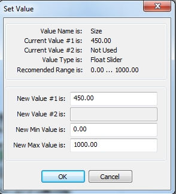
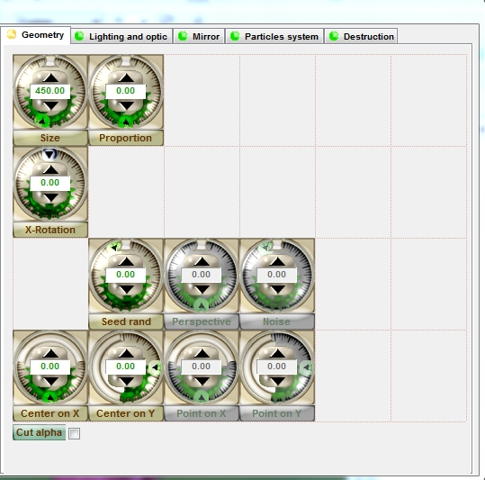
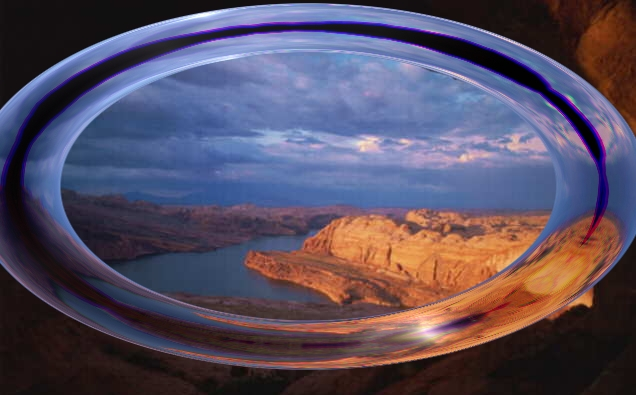
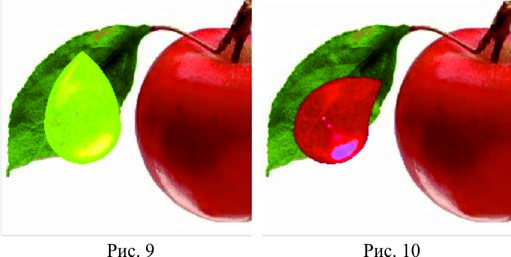
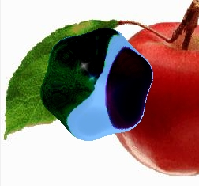
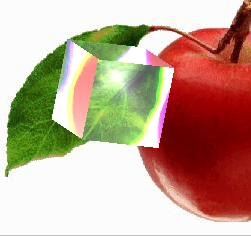
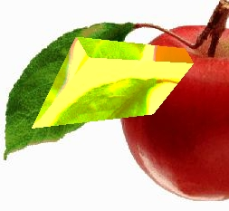
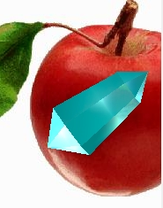
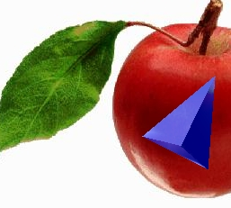

Плагин Panopticum LensPro 3.0 (Часть 1)
Прежде всего хочу поздравить всех с наступающим Новым Годом и пожелать всего наилучшего и процветания этому замечательному сайту!!!
В этом уроке речь пойдет о плагине AlphaPlugins, который можно использовать для получения большого количества интересных эффектов и может пригодиться любому пользователю. Этот плагин хоть и называется – для Фотошоп, однако прекрасно работает и в Photo-Paint. Как обычно бывает, все настройки и параметры этого плагина на английском языке, плюс к этому, руководство пользователя тоже написано на английском. Это никак не может радовать тех, кто английский не учил или успел его основательно забыть.
Данный плагин состоит из набора отдельных плагинов, в чем вы можете убедиться при его установке. Здесь речь пойдет об одном из плагинов этого набора – Panopticum LensPro 3.0, который мне понравился больше остальных. Урок является переводом руководства пользователя. Но т. к. я не профессиональный переводчик, надеюсь вы не будете меня «забрасывать камнями», если где-то этот перевод получился не совсем удачным. Для поклонников чтения оригинала, в составе плагина имеется руководство пользователя на английском в формате .pdf. Я местами вставил свои скриншоты и несколько слов от себя. Т. к. данный урок довольно объемный, я решил его разделить на несколько частей…
Panopticum LensPro 3.0
Вводная часть
Panopticum LensPro - является новым плагином для Adobe Photoshop и других графических редакторов, поддерживающих тот же стандарт. Это помогает пользователю в создании различных линз, кристаллов и стеклянных поверхностей. Этот модуль - набор многочисленных эффектов для того, чтобы сделать стеклянные объекты и узоры из них. Каждый стеклянный объект из набора содержит много регулируемых параметров. Стеклянные объекты из набора содержат высококачественный и быстрый механизм рисования, который делает полученные эффекты линзы эффектными и реалистичными.
Настройка параметров формы линз и кристаллов из набора поможет Вам рисовать линзы и кристаллы всех видов форм. В дополнение к предложенным формам линзы можно всегда настраивать формы линз и кристаллов, выделяя область формы или загружая любую форму из стандартных файлов 3DS или VRML.
Помимо параметров формы можно также скорректировать оптические свойства стекла и яркость линз, которые сделают Ваши линзы выразительными и привлекательными. Поместив сверху Вашей линзы некоторое отражение, например, облака, поверхности или надписи, Вы заставите линзу выглядеть более реалистичной.
Механизм системы частиц поможет Вам создать сложные узоры и фоны с помощью линз и кристаллов различной формы и цвета. Стеклянные объекты могут быть рассеяны и помещены в какой-то узор. Можно скорректировать размер, цвет, соотношения, расположение и много других параметров для линз в системе частиц.
Спецэффекты как постепенный рост, вспышка или деление на части, и другие, могут использоваться для 3-D кристаллических объектов. Здесь можно скорректировать параметры силы вспышки, хаоса и турбулентности стеклянных кусков, гравитации, направления и силы ветра, и т.д., которые увеличат число уникальных эффектов в Вашей работе. Например, Ваш объект может постепенно разваливаться под силой ветра, и падающие куски могут продолжать кружиться в торнадо.
Panopticum Lens Pro III представлен уникальным графическим интерфейсом, чтобы облегчить Вашу работу и сделать ее как можно наиболее интересной и эффективной. Поскольку плагин содержит многочисленные параметры, то они сгруппированы, ненужные в данный момент параметры, скрыты или недоступны, что помогает создать более удобный для пользователя интерфейс с всплывающими подсказками для каждого параметра. Можно легко изменить и значение, и диапазон значений параметров.
Мы действительно надеемся, что функции нашего нового плагина будут полезны для Вас, помогут Вам сделать работу приятной и плодотворной. Механизм предварительного просмотра сэкономит Ваше время и поможет в более точной установке параметров.
Системные требования
Panopticum LensPro 3.0 для Adobe Photoshop
Windows 98 / NT/ Windows XP
• Версия Windows NT 4.0 или Windows 98 или более поздняя версия операционной системы.
• PC на основе процессора Intel 486/66, Pentium, Pentium II, или процессором Pentium Pro.
• Не менее 32 мегабайта RAM, 64 мегабайта RAM рекомендуются.
• рекомендуется 16.7 Миллионов цветов.
• разрешение экрана 640 х 480; рекомендуемое 800 х 600 или выше.
• 5 мегабайт свободного пространства на диске для установки.
Установка
Действия, которые Вы должны выполнить, чтобы установить Panopticum Lens Pro III:
• Закройте Photo-Paint, если он у Вас сейчас запущен.
• Запустите программу установки плагина
• Выберите папку для сохранения, где сохранены плагины. Например: C:\Program Files\Corel\CorelDRAW Graphics Suite X5\Plugins
• Запустите Photo-Paint.
• Перейдите в меню «Effects/Panopticum» (Эффекты/ Panopticum), чтобы найти там Lens Pro III.
• Наслаждайтесь!
Интерфейс
Прежде, чем мы продолжим описывать параметры Panopticum Lens Pro III, давайте поговорим об интерфейсе плагина и его функциях. Большое число регулируемых параметров Panopticum Lens Pro III позволяет получать многочисленные эффекты и их модификации. Хотя может показаться, что использование нашего плагина не легкое дело, вследствие его сложности, нами был представлен удобный для пользователя интерфейс, чтобы внесение корректировок параметров было простым.
После выбора LensPro в меню «Effects/Panopticum» (Эффекты/ Panopticum), появится диалоговое окно настроек параметров (рис. 1).
Все параметры были сгруппированы их назначению:
• Geometry (Геометрия) - эти параметры корректируют размер, форму и расположение стеклянных объектов.
• Lighting and Optic (Освещение и Оптические) - эти параметры корректируют оптические свойства стекла и освещение линз и кристаллов.
• Mirror (Зеркало) - на этой странице, можно установить изображение, которое отразится в линзе, а так же как скорректировать параметры отражения.
• Particles System (Система частиц) - эти параметры помогут Вам в создании всех видов изображений и фонов линз и кристаллов.
• Destruction (Деструкция) - эти параметры отвечают за дополнительные эффекты для кристаллов, например, разрушение, рассеивание, постепенный рост, и т.д.
Согласно типу выбранной линзы, все несоответствующие параметры становятся
скрытыми или отключены.
Названия подходящих параметров, для того же самого предмета, имеют одинаковый цвет, что облегчает их поиск в диалоговом окне.
Левая часть диалогового окна - окно предварительного просмотра (рис. 1), где можно видеть изменения своего изображения после помещения поверх него линзы. Используя кнопки «+» и «-» можно легко увеличить или уменьшить масштаб предварительного просмотра.
Чтобы перетащить изображение в окне предварительного просмотра, щелкните и удерживайте левую кнопку мыши. Чтобы изменить размещение стеклянного объекта на изображении, щелкните и удерживайте правую кнопку мыши.
С целью увеличения скорости просмотра нарисованных линз и кристаллов в окне предварительного просмотра, они прорисовываются с низким качеством и без сглаживания. Однако, как только Вы нажмете кнопку «ОК», эффект будет применен к Вашему изображению с рендерингом высшего качества.
Под окном предварительного просмотра есть флажок «Auto Update» (Автообновление). Когда он установлен, предварительный просмотр изображения автоматически перерисовывается после каждого изменения настройки входных параметров. Сброс этого флажка может быть полезным, если Ваша картинка слишком сложная или у Вашего компьютера недостаточно ресурсов. В этом случае, чтобы перерисовать Ваше изображение нажмите кнопку «Update» (Обновить).
Раскрывающийся список «Render Mode» (Режим Прорисовки) содержит варианты прорисовки для Ваших объектов. Помните, что в окне предварительного просмотра все прорисовывается с низким качеством.
Теперь давайте немного поговорим о корректировке значений параметров. Наш интерфейс включает новые регуляторы, ответственные за значения соответствующих параметров. Есть регуляторы следующих типов:
• Настройка дробных и целых значений в установленном диапазоне.
• Корректировка угла в градусах.
• Корректировка значений на одной из осей (Х или Y)
• Корректировка направления источника света.
Чтобы изменить значение параметра, можно или щелкнуть по регулятору или перетащить его стрелку, удерживая кнопку мыши. Изображение линзы изменится в реальном масштабе времени, как только изменится любой параметр.
Если у регулятора есть специальное окошко для чисел, можно просто ввести значение с клавиатуры и нажать клавишу «Enter» или использовать кнопки «Up» (Вверх) и «Down» (Вниз), чтобы немного изменить значение параметра (рис. 2).
Другой способ скорректировать значение параметра состоит в том, чтобы щелкнуть правой кнопкой мыши по регулятору. Вы увидите, что появится маленькое диалоговое окно (рис. 3), где можно прочитать информацию об этом параметре и изменить его значение, а так же как изменить диапазон значений. Например, рекомендуемый диапазон значений для параметра Size (Размер) 0…1000, а Вам нужно, чтобы было 0…50 000. Измените диапазон и продолжайте корректировать значения параметра размера, выбирая из нового диапазона.

Типы линз
Модуль Panopticum Lens Pro III этого плагина содержит большое разнообразие различных типов линз и кристаллов. Можно выбрать тип, который Вам нужен из раскрывающегося списка Object Type (Тип объекта), который размещается под окном предварительного просмотра (рис. 1). Когда Вы выбираете тип линзы, которая Вам нужна, все ненужные параметры в диалоговом окне становятся скрытыми или отключенными. Все параметры сгруппированы в 5 групп, первой из которых является Geometry (Геометрия).
Страница Geometry (Геометрия).
Параметры этой страницы (рис. 4) управляют размером, формой и расположением стеклянных объектов.

Внизу страницы Вы расположен маленький флажок Cut Alpha (Обрезка Альфа). В зависимости от того, установлен он или нет, он обрезает или оставляет изображение вокруг линзы. Выше флажка есть два регулятора, корректирующие положение центра стеклянного объекта – «Center X» и «Center Y». Для размещения линзы, в нужном месте, Вы можете перетащить ее в окне предварительного просмотра, щелкнув и удерживая правую кнопку мыши. Выше этого параметра есть регулятор «Seed Random», где можно установить первоначальное значение генератора случайных чисел. Это может быть очень полезно в случае, если Вы хотите иметь результат отличный от того, который Вы получите при использовании случайного распределения, например, в системе частиц, вспышке кристаллов, шумов, и т.д.
Слева от этих регуляторов Вы обнаружите некоторые параметры для настройки искажения перспективы для 3-D кристаллов. Они станут активными после того, как Вы выберете некоторый тип кристалла в списке «Object Type» (Тип объекта). Параметр «Perspective» (Перспектива) корректирует силу искажения. «Point on X» (Точка на Х) и «Point on Y» (Точка на Y) позволяют устанавливать точку перспективы. Параметр «Noise» (Шум) корректируют значение хаотического шума для координат вершин кристалла. Результат, полученный добавлением некоторых шумов, зависит от первоначального значения генератора случайных чисел, установленного в параметре «Seed Random».
Регуляторы «X-Rotate», «Y-Rotate» и «Z-Rotate» корректируют поворот стеклянного объекта вокруг соответствующей оси. «Y-Rotate» и «Z-Rotate» становятся доступными только когда выбирается некоторый 3-D кристалл в списке «Object Type» (Тип объекта). Некоторые другие параметры становятся также доступными для 3-D кристаллических объектов.
«Draw Back Faces» (Рисовать задние грани) – при установке, прорисовываются задние стороны кристаллов.
«Transposition» - изменяет порядок вращения вокруг различных осей, поскольку порядок вращения определяет конечное расположение 3-D кристалла.
Параметр «Size» (Размер) определяет размер линз и кристаллов.
Т. к. регуляторы становятся доступными согласно типу линзы, дальше параметры на странице Geometry (Геометрия) будут описаны для каждого типа линз и кристаллов.
Ellipse Lens (Эллиптическая Линза)
Geometry Parametrs (Геометрические параметры) Эллиптической линзы:
Size (Размер) - корректирует размер линзы.
Proportion 1 (Пропорция 1) - корректирует соотношение Осей линзы Х и Y. Rotation (Вращение) - корректирует поворот линзы.
Square Lens (Квадратная Линза )
Square Lens (Квадратная Линза ) - является классической прямоугольной линзой. Эффект позволяет Вам создавать любую линзу в форме прямоугольника с многочисленными параметрами, которые корректируют форму, оптику и свойства цвета линзы.
Geometry Parametrs (Геометрические параметры) Квадратной линзы:
Size (Размер) - корректирует размер линзы.
Proportion 1 (Пропорция 1) - корректирует соотношение осей линзы Х и Y.
Rotation (Вращение) - корректирует поворот линзы.
Torus Lens (Торовидная Линза)

Torus Lens (Торовидная Линза) - для создания линзы в форме тора с большим спектром регулируемых параметров. Форма тора изменяется от простого круга до тора любой формы, ориентации и масштаба. (Рис. 8).
Geometry Parametrs (Геометрические параметры) Торовидной линзы:
Size (Размер) - корректирует размер линзы.
Inner Size (Внутренний Размер) - корректирует внутренний радиус торовидной линзы.
Proportion (Пропорция) - корректирует соотношение осей линзы Х и Y.
Rotation (Вращение) - корректирует поворот линзы.
Border Lens (Ограничивающая линза)
Border Lens (Ограничивающая линза) или лучше сказать «линза в форме рамки» - легко и быстро создает прямоугольные ограничивающие линзы в виде рамок. Можно отредактировать соотношение и ширину границ.
Geometry Parametrs (Геометрические параметры) Ограничивающей линзы:
Size (Размер) - корректирует размер линзы.
Inner Size (Внутренний Размер) - корректирует внутренний радиус линзы-рамки.
Proportion 1 (Пропорция 1) - корректирует соотношение осей линзы Х и Y.
Rotation (Вращение) - корректирует поворот линзы.
Droplet Lens (Линза-капелька)

Droplet Lens (Линза-капелька) - эта линза позволяет Вам дополнить Ваше изображение с помощью капель, стекающих на влажном стекле или с помощью кристаллических слез, проливающихся из глаз вашего героя. Можно отредактировать форму кончика капли (Рис. 9 - 10).
Geometry Parametrs (Геометрические параметры) Линзы-капельки:
Size (Размер) - корректирует размер линзы.
Height (Высота) - корректирует высоту «хвостовой части» капель.
Skew (Наклон) - корректирует направление изгиба «хвостовой части» в линзах.
Proportion (Пропорция) - корректирует соотношение осей линзы Х и Y.
Proportion 2 (Пропорция 2) - корректирует соотношение осей линзы Х и Y с сохранением всех соотношений при вращении.
X-Rotation - корректирует вращение линзы.
Clam Lens (Линза-моллюск)
Clam Lens (Линза-моллюск), получившая свое название из-за сходства с формой моллюсков (Clam) - доступно множество форм линзы: от классической круглой линзы до очень сложной, такой как звездообразная линза с кривыми верхними частями (Рис. 11-12).
Geometry Parametrs (Геометрические параметры) Линзы -моллюска:
Vertex Count (Количество вершин) - корректирует число вершин.
Size (Размер) - корректирует размер линзы.
Cubature (Кубатура) - корректирует кривизну частей линзы между вершинами.
ZigZag (Зигзаг) - корректирует направление вершин, изгибающихся в звездообразных линзах;
Proportion (Пропорция) - корректирует соотношение Осей линзы Х и Y.
X-Rotation - корректирует вращение линзы.
Rose Lens (Линза-роза)

Rose Lens (Линза-роза) - доступно много форм линзы: от классической круглой линзы до очень сложной, такой как линза в форме розы с кривыми верхними частями (Рис. 13).
Geometry Parametrs (Геометрические параметры) Линзы -розы:
Vertex Count (Количество вершин) - корректирует число вершин.
Size (Размер) - корректирует размер линзы.
Amplitude (Амплитуда) - корректирует кривизну частей линзы между вершинами.
Rose Type 1 (Тип Розы 1) - вкл\выкл режим, в котором внутренние углы становятся острыми.
Proportion (Пропорция) - корректирует соотношение осей линзы Х и Y.
X-Rotation - корректирует вращение линзы.
Ниже описание различных 3-D кристаллов и параметров, которые определяют их форму.
Cube Crystal (Кубический кристалл)

Cube Crystal (Кубический кристалл) - 3-D кристалл в форме куба, который может быть преобразован и повернут (Рис. 14).
Geometry Parametrs (Геометрические параметры) Кубического кристалла:
Size (Размер) - корректирует размер кристалла.
X-Rotation - корректирует вращение линзы по оси X.
Y-Rotation - корректирует вращение линзы по оси Y.
Z- Rotation - корректирует вращение линзы по оси Z.
Cube Bevel Crystal (Кубический кристалл со скосом)
Cube Bevel Crystal (Кубический кристалл со скосом) - 3-D кристалл в форме куба со скошенными краями, который может быть преобразован и повернут .
Geometry Parametrs (Геометрические параметры) Кубического кристалла со скосом:
Size (Размер) - корректирует размер кристалла.
Bevel (Скос) - корректирует скос углов кристалла.
X-Rotation - корректирует вращение линзы по оси X.
Y-Rotation - корректирует вращение линзы по оси Y.
Z- Rotation - корректирует вращение линзы по оси Z.
Prism Crystal (Кристалл- призма)

Prism Crystal (Кристалл- призма) - 3-D кристалл в форме призмы, который может быть преобразован и повернут. (Рис. 15).
Geometry Parametrs (Геометрические параметры) Кристалла- призмы:
Size (Размер) - корректирует размер кристалла.
Height (Высота) - корректирует высоту кристалла.
Base (Основание) - определяет размер основных граней кристалла.
Peak 1 (Пик 1) - устанавливает высоту дополнительного пика, сформированного из первой грани основания кристалла.
Peak 2 (Пик 2) - устанавливает высоту дополнительного пика, сформированного из второй грани основания кристалла.
Bevel (Наклон) - корректирует пропорции кристаллов.
X-Rotation - корректирует вращение линзы по оси X.
Y-Rotation - корректирует вращение линзы по оси Y.
Z- Rotation - корректирует вращение линзы по оси Z.
Prism N-gon Crystal (Кристалл N-угольная призма)

Prism N-gon Crystal (Кристалл N-угольная призма) - создает 3-D кристаллы в форме многоугольной призмы. Кристаллы могут быть преобразованы и повернуты (Рис. 16).
Geometry Parametrs (Геометрические параметры) Кристалла N-угольная призма:
Vertex Count (Количество вершин) - корректирует число вершин.
Size (Размер) - корректирует размер кристалла.
Height (Высота) - корректирует высоту кристалла.
Base (Основание) - определяет размер основных граней кристалла.
Base of Back (Основание Обратной стороны) - определяет размер второго основания кристалла.
Peak 1 (Пик 1) - устанавливает высоту дополнительного пика, сформированного из грани первого основания кристалла.
Peak 2 (Пик 2) - устанавливает высоту дополнительного пика, сформированного из грани второго основания кристалла.
X-Rotation - корректирует вращение линзы по оси X.
Y-Rotation - корректирует вращение линзы по оси Y.
Z- Rotation - корректирует вращение линзы по оси Z.
Polygon Prism Bevel Crystal (Кристалл Многоугольная Призма со Скосом)
Polygon Prism Bevel Crystal (Кристалл Многоугольная Призма со Скосом) - создает 3-D кристаллы в форме многоугольной призмы с фасками. Кристаллы могут быть преобразованы и повернуты.
Geometry Parametrs (Геометрические параметры) Кристалла Многоугольная Призма со Скосом:
Vertex Count (Количество вершин) - корректирует число вершин.
Size (Размер) - корректирует размер кристалла.
Height (Высота) - корректирует высоту кристалла.
Base (Основание) - определяет размер основных граней кристалла.
Base of Back (Основание Обратной стороны) - определяет размер второго основания кристалла.
Peak 1 (Пик 1) - устанавливает высоту дополнительного пика, сформированного из грани первого основания кристалла.
Peak 2 (Пик 2) - устанавливает высоту дополнительного пика, сформированного из грани второго основания кристалла.
Bevel (Скос) - настройка скоса углов кристалла.
X-Rotation - корректирует вращение линзы по оси X.
Y-Rotation - корректирует вращение линзы по оси Y.
Z- Rotation - корректирует вращение линзы по оси Z.
Prism N-gon Bevel and Back Crystal (Кристалл N-угольная обратная призма со скосом)
Prism N-gon Bevel and Back Crystal (Кристалл N-угольная обратная призма со скосом) - создает 3-D кристаллы с исходной формой. Кристаллы могут быть преобразованы и повернуты.
Geometry Parametrs (Геометрические параметры) Кристалла N-угольная обратная призма со скосом:
Vertex Count (Количество вершин) - корректирует число вершин.
Size (Размер) - корректирует размер кристалла.
Height (Высота) - корректирует высоту кристалла.
Height of Side (Высота Стороны) - определяет высоту боковых граней.
Base (Основание) - определяет размер основных граней кристалла.
Base of Back (Основание Обратной стороны) - определяет размер второго основания кристалла.
Peak 1 (Пик 1) - устанавливает высоту дополнительного пика, сформированного из грани первого основания кристалла.
Peak 2 (Пик 2) - устанавливает высоту дополнительного пика, сформированного из грани второго основания кристалла.
Bevel (Скос) - настройка скоса углов кристалла.
X-Rotation - корректирует вращение линзы по оси X.
Y-Rotation - корректирует вращение линзы по оси Y.
Z- Rotation - корректирует вращение линзы по оси Z.
Pyramid Crystal (Пирамидальный Кристалл)

Pyramid Crystal (Пирамидальный Кристалл) - это 3-D кристалл в форме треугольной пирамиды. Кристаллы могут быть преобразованы и повернуты (Рис. 17).
Geometry Parametrs (Геометрические параметры) Пирамидального кристалла:
Size (Размер) - корректирует размер кристалла.
Height (Высота) - корректирует высоту кристалла.
Peak 1 (Пик 1) - устанавливает высоту дополнительного пика, сформированного из грани первого основания кристалла.
Bevel (Наклон) - корректирует пропорции кристаллов.
X-Rotation - корректирует вращение линзы по оси X.
Y-Rotation - корректирует вращение линзы по оси Y.
Z- Rotation - корректирует вращение линзы по оси Z.
Perspective (Перспектива) - корректирует глубину рисунка в перспективе.
Pyramid Back Crystal (Кристалл Обратная пирамида)
Pyramid Back Crystal (Кристалл Обратная пирамида) - 3-D кристалл в форме двух треугольных пирамид, растущих в разных направлениях от их общей основы. Кристаллы могут быть преобразованы и повернуты.
Geometry Parametrs (Геометрические параметры) Кристалла Обратная пирамида:
Size (Размер) - корректирует размер кристалла.
Height (Высота) - корректирует высоту кристалла.
Base of Back (Основание Обратной стороны) - определяет размер второго основания кристалла.
Peak 1 (Пик 1) - устанавливает высоту дополнительного пика, сформированного из грани первого основания кристалла.
Bevel (Наклон) - корректирует пропорции кристаллов.
X-Rotation - корректирует вращение линзы по оси X.
Y-Rotation - корректирует вращение линзы по оси Y.
Z- Rotation - корректирует вращение линзы по оси Z.
Плагин Panopticum LensPro 3.0 (Часть 2)
Плагин Panopticum LensPro 3.0 (Часть 3)